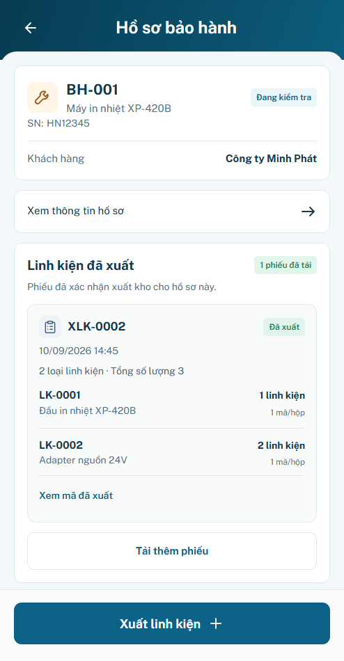
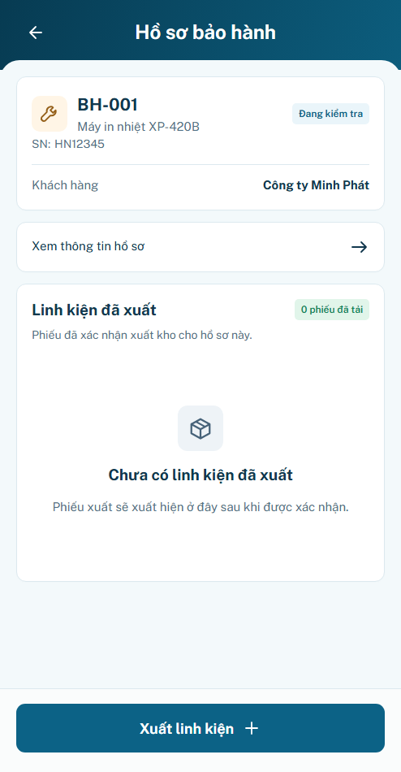
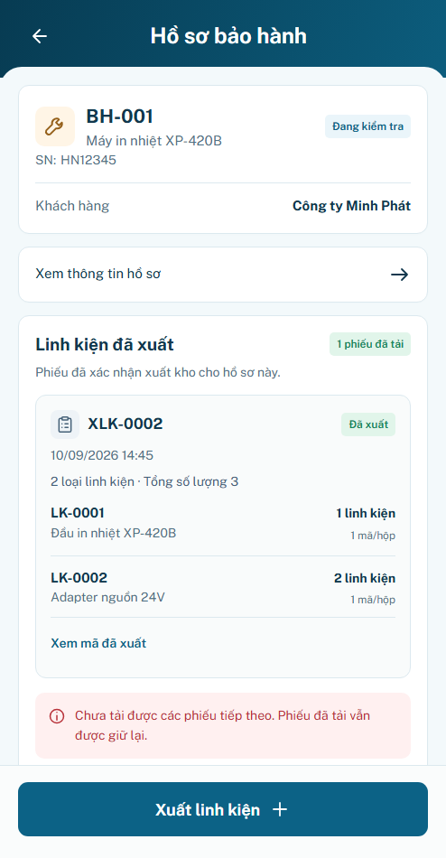

MOTION_P20 · Lịch sử linh kiện
Giữ native scroll và hàng phiếu tĩnh. Spinner chỉ theo request, lỗi/rỗng fade140ms ở auto; OS reduced80ms, off không animation. Không đổi nghiệp vụ, fixture hoặc footerLOCK. Motion chờ review; production/hardware chưa xác minh.
Mở ứng dụng · minhanh / preview · Bảo hành → hồ sơ → Linh kiện → Xem lịch sử phiếu linh kiện. Đổi motion mode trong công cụ AppShell ngoài app; các mẫu4panel ở công cụP20.
Báo cáo · Geometry/performance summary · Source/diff identity · Behavior/motion checks.
Auto
Trace thực sau triển khai · Trace trước
P20.S01
P20.S02P20.S03 P20.S04
P20.S04
OS giảm chuyển động
Trace thực sau triển khai · Trace trước
P20.S01 P20.S02P20.S03
P20.S02P20.S03
P20.S04
Tắt chuyển động
Trace thực sau triển khai · Trace trước
P20.S01 P20.S02
P20.S02 P20.S03
P20.S03 P20.S04
P20.S04
Trước–sau trạng thái đang tải (cùng494×950/DPR1)
TrướcSau · thêm spinner trong slot cũ
15 nhóm browser3mode,60test logic,geometry12/12 không đổi. Test/ảnh không tự nghiệm thu visual. Spinner tĩnh vẫn có busy text khi reduced/off.
Danh sách dài / giới hạn đo
Stress riêng1/30/300phiếu,không thay seed nguồn.300phiếu tạo12.649DOMnodes và có longtask cả trước/sau. Chưa kết luận60fps/thiết bị thật hoặc tối ưu long-list hoàn tất. Giữ quyết định M00 virtualizationDEFERRED, không cài thư viện trong lượt motion.
Profile trước · Profile sauBackend phân trang/quyền/cursor chưa xác minh. Không deploy; reload preview mất dữ liệu.